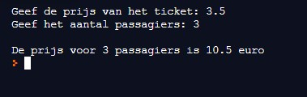

Schrijf een programma om de kosten van een treinrit te berekenen. De gebruiker voert het aantal personen in en de prijs per ticket, en de computer berekent het totaal te betalen bedrag.
Opbouw van het programma:
Maak gebruik van passende commentaarregels om de verschillende stappen te verduidelijken.
Hieronder vind je de schermafdruk van een uitvoering van het programma:
